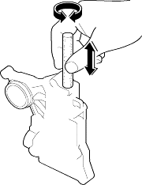
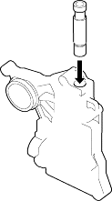

- Soak a sheet of #600 abrasive paper in ATF for about 30 minutes.
- Carefully tap the valve body so the sticking valve drops out of its bore. It may be necessary to use a small screwdriver to pry the valve free. Be careful not to scratch the bore with the screwdriver.
- Inspect the valve for any scuff marks. Use the ATF-soaked #600 paper to polish off any burrs that are on the valve, then wash the valve in solvent and dry it with compressed air.
- Roll up half a sheet of ATF-soaked #600 paper and insert it in the valve bore of the sticking valve.
Twist the paper slightly, so that it unrolls and fits the bore tightly, then polish the bore by twisting the paper as you push it in and out.
NOTE: The valve body is aluminium and doesn't require much polishing to remove any burrs.

- Remove the #600 paper. Thoroughly wash the entire valve body in solvent, then dry it with compressed air.
- Coat the valve with ATF, then drop it into its bore. It should drop to the bottom of the bore under its own weight. If not, repeat step 4, then retest. If the valve still sticks, replace the valve body.

- Remove the valve and thoroughly clean it and the valve body with solvent. Dry all parts with compressed air, then reassemble using ATF as a lubricant.